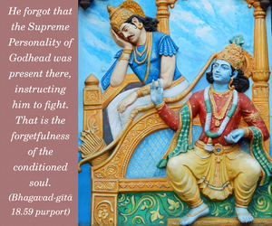

If you do not act according to My direction and do not fight, then you will be falsely directed. By your nature, you will have to be engaged in warfare.



Arjuna was a military man, and born of the nature of the kṣatriya. Therefore his natural duty was to fight. But due to false ego he was fearing that by killing his teacher, grandfather and friends he would incur sinful reactions. Actually he was considering himself master of his actions, as if he were directing the good and bad results of such work. He forgot that the Supreme Personality of Godhead was present there, instructing him to fight. That is the forgetfulness of the conditioned soul. The Supreme Personality gives directions as to what is good and what is bad, and one simply has to act in Kṛṣṇa consciousness to attain the perfection of life. No one can ascertain his destiny as the Supreme Lord can; therefore the best course is to take direction from the Supreme Lord and act. No one should neglect the order of the Supreme Personality of Godhead or the order of the spiritual master, who is the representative of God. One should act unhesitatingly to execute the order of the Supreme Personality of Godhead – that will keep one safe under all circumstances.